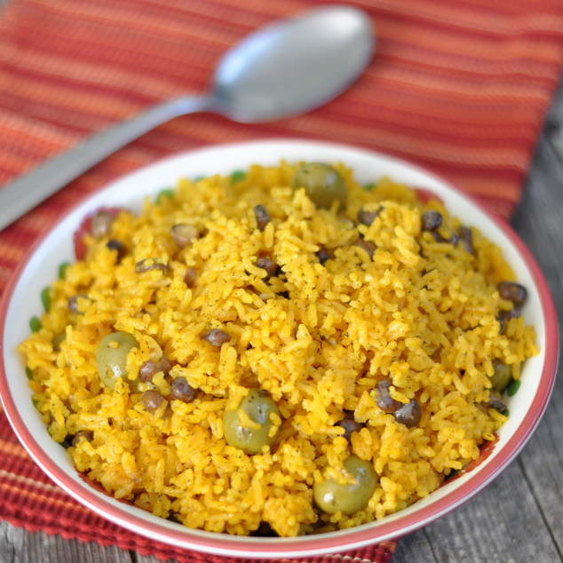

Arroz Con Gandules

Description
Arroz con Gandules are a typically Puerto-rican dish any puerto-rican will attest their grandmother makes the best.
(I also make that affirmation!)
An aromatic dish with fragrant rice
and pigeon peas (less than desirably named but truly delicious)
will be sure to become a quick favorite of all who try it.
Ingredients
- 4 tablespoons neutral oil (vegetable or canola)
- 4 tablespoons sofrito
- 1 15 ounce can gandules (pigeon peas)
- 2 1/2 tablespoons adobo seasoning
- 1 packet sazon
- 1 8 ounce can tomoato sauce
- 3 cups long grain rice
- 1/2 teaspoon ground black pepper
- 1/4 cup pitted olives
- 4 cups water
Steps
- Coat the bottom of a pot over high heat with the oil. Once the oil is hot, add in sofrito. Let the sofrito heat in the oil until it becomes fragrant.
- Add gandules and mix until the beans are well coated. Add in sazon and mix. Add ground black pepper and mix. Add tomato sauce and… you guessed it, mix.
- Add adobo seasoning, and cook the gandules in this mixture for two minutes.
- Add your rice into the pot and make sure to mix well so that every grain of rice is coated. Cook for 3-4 minutes, and then add your water. Add your olives to the pot and mix to incorporate.
- Mix well and let the water come to a boil, leaving some of it to evaporate and some to absorb into the rice into the rice. This should take about 10 minutes. When you can start seeing the olives and beans poking through the water, cover your pot and lower the flame to the lowest heat setting. Leave the rice to cook for 45 minutes.
- After 45 minutes, remove the lid and stir your rice to evenly distribute all of the beans and olives (since everything will have risen to the top). Fluff with a fork and serve. Enjoy!